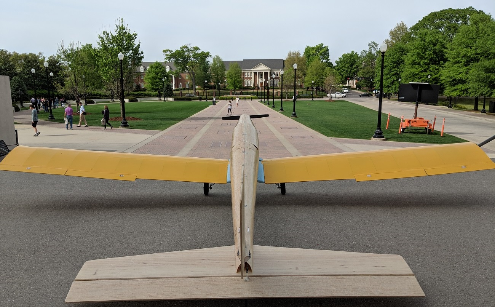

ARPL's Balsa Research Plane
During Summer 2017, I worked on a 3D design for of a model airplane wing.
This wing was to be mounted under the fuselage of the Aircraft Rapid Prototyping Lab's
current research plane.
Over the course of the following Fall semester, I manufactured the design with the assistance of two freshmen (my mentees from the Randall Research Scholars Program).
The wing was made with lightness in mind. The ribs were shaped from 1/16in thick balsa sheets, using a laser-cutter. The leading edges were shaped by wetting 1/32inch sheets of balsa with ethanol/water and slowly pressing them into a 3D printed mold. The spars, which required more bending stiffness, were cut from 1/8inch basswood. Since wood is nonisotropic, the grain direction was taken into account when cutting the parts.
Finally, the saddle was shaped from a block of foam using a CNC machine.
- Software Used: Autodesk Inventor 2017, MS Excel
- Airfoil: SD7062
- Span: 86 in
- Chord Length: 10 in
- Dihedral Angle: 1.5 degrees
- Wing Geometry: No Twist, Constant Chord Length
- Servos: HS-65HB High Torque Ultra Micro
- Materials: Balsa Wood, Basswood, Plywood, Cyanoacrylate(Super Glue),
2-Part Epoxy, Fiber Glass, Servo Motors, High Density Foam,
Hex Nuts, Steel Screws, Monokote, Nylon Control Horns, Steel Clevis and Pushrods

Shaping the Leading Edge Using 3D Printed Mold and Wet Balsa Sheet

Close View of Balsa Wing with Servo

Balsa Plane (back view)